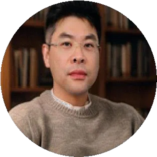
李友喜
AI 工程中心 / 首席 AI 官团队资料介绍其为帆得路 Vanderlu 项目创始人、台湾淡江大学人工智能博士，担任工信部教考中心人工智能培训资深讲师；主导产品设计与运营，曾任科技公司 COO、CTO。
完整团队
技术、业务与交付，共同承接每一次健康需求。17 位具名成员，五个中心，一条协作路径。
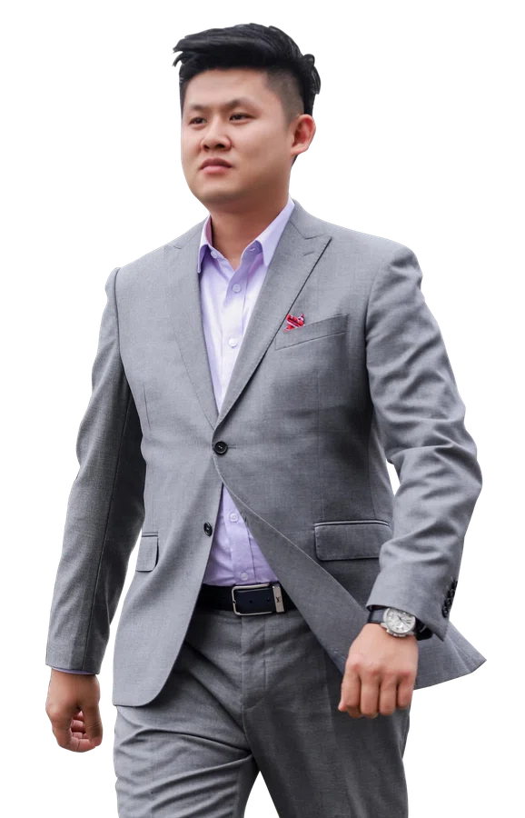
总经办
从资本投资进入大健康产业，继而深耕线下医疗服务、功能医学与全周期健康管理，并在 2026 年推进 AI 与健康服务融合。
总经办连接 AI 工程、营销支持、履约交付、品牌战略和综合支持五个中心，让产品建设、专业服务与客户沟通有清晰的分工。
2026 年圆和医疗的公开公告，列其为康合（杭州）国际健康管理有限公司总裁。
查看公开记录 ↗从产品定义、研发架构到 AI 供应链支持，让技术进入实际服务。

团队资料介绍其为帆得路 Vanderlu 项目创始人、台湾淡江大学人工智能博士，担任工信部教考中心人工智能培训资深讲师；主导产品设计与运营，曾任科技公司 COO、CTO。
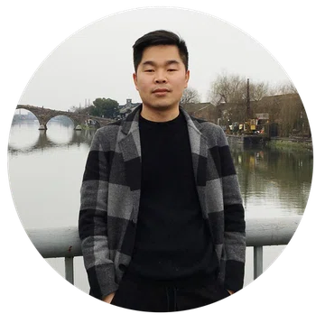
资料列示多数据源、动态路由等复杂业务开发能力，关注代码规范、线上故障排查与业务需求落地。
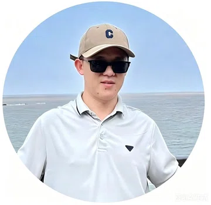
十余年全栈开发经验，涵盖 Java、Python 后端，Vue、UniApp 前端，以及 MySQL 数据库设计与性能调优。
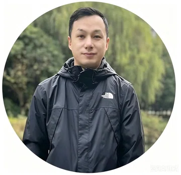
移动端、后端、架构与 AI 智能体开发经验，涉及 iOS、Android 原生开发及 Java 后端微服务。
产品经理、视觉设计师、交互设计师与文案经理等资料所列岗位。
开发管理、前端、后端、安全、交互，以及首席架构师与架构经理等岗位方向。
技术售前、解决方案、POC、招投标、报价核算与商务内勤等岗位方向。
组织业务沟通、渠道协同与学习支持，将服务内容转化为可以理解的合作方案。
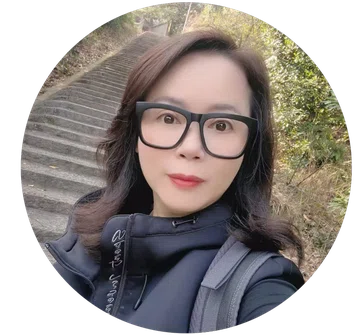
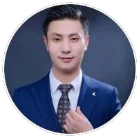
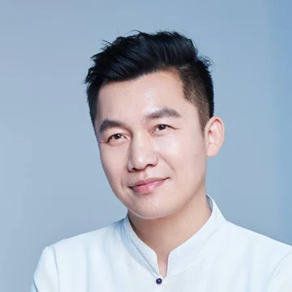
承接服务安排与客户跟进，连接健康管理人员、专业咨询资源和就医协助流程。
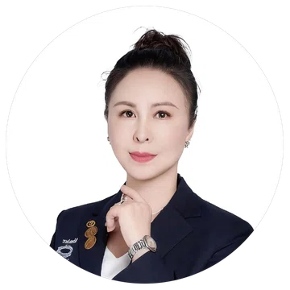
履约部列示医务履约经理、健康管理师；客户部列示客服经理、客情经理。资料未将上述岗位逐一指定给具名成员。
负责品牌内容与信息表达，让服务体系、知识内容和客户体验保持一致。
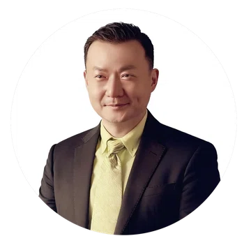
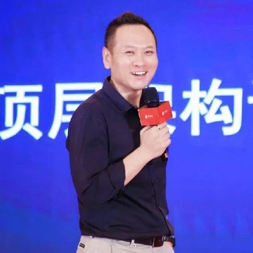
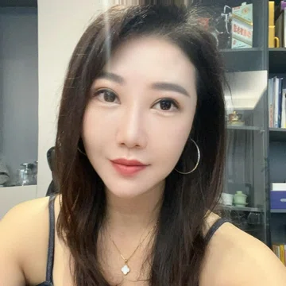
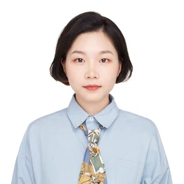
支持组织运转与规范服务，衔接团队、流程和经营所需的基础职能。
姓名、归属与人物简介按项目团队资料整理。资料未列明的具体任职与个人履历未作补写；综合支持中心未提供具名人员。